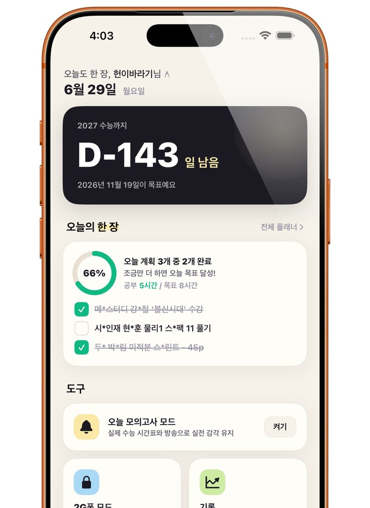
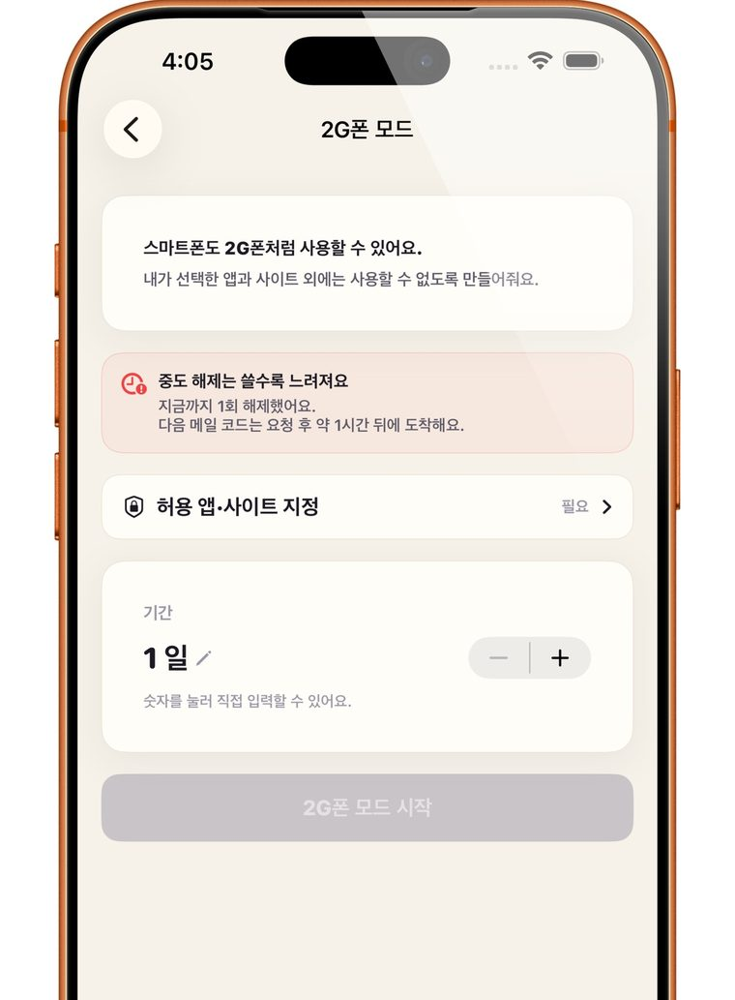
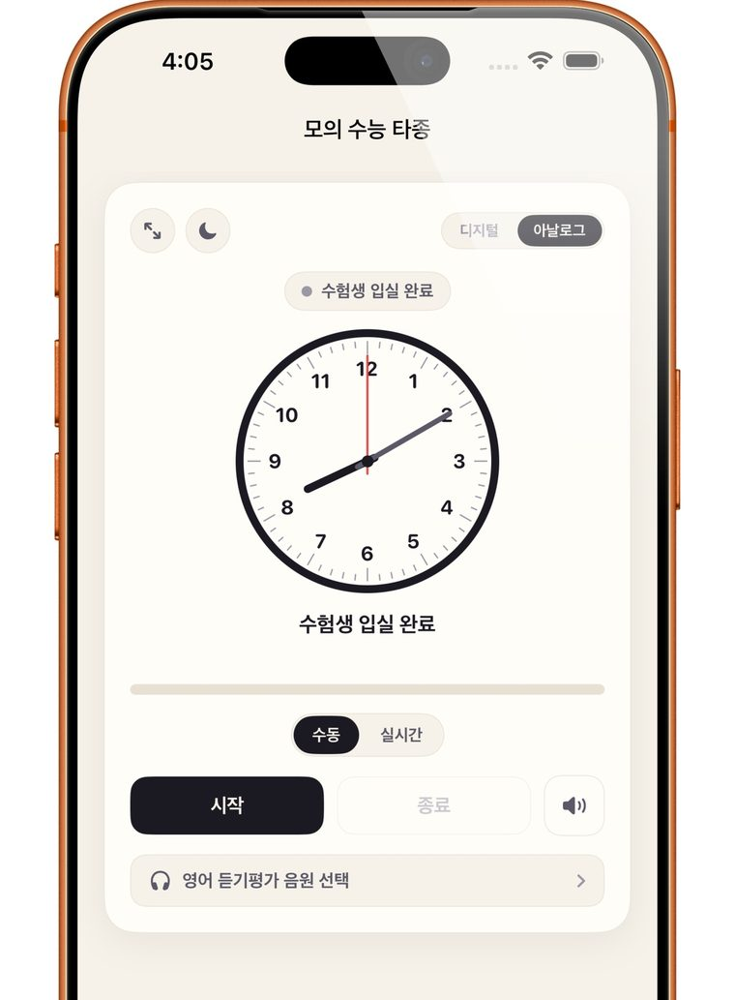
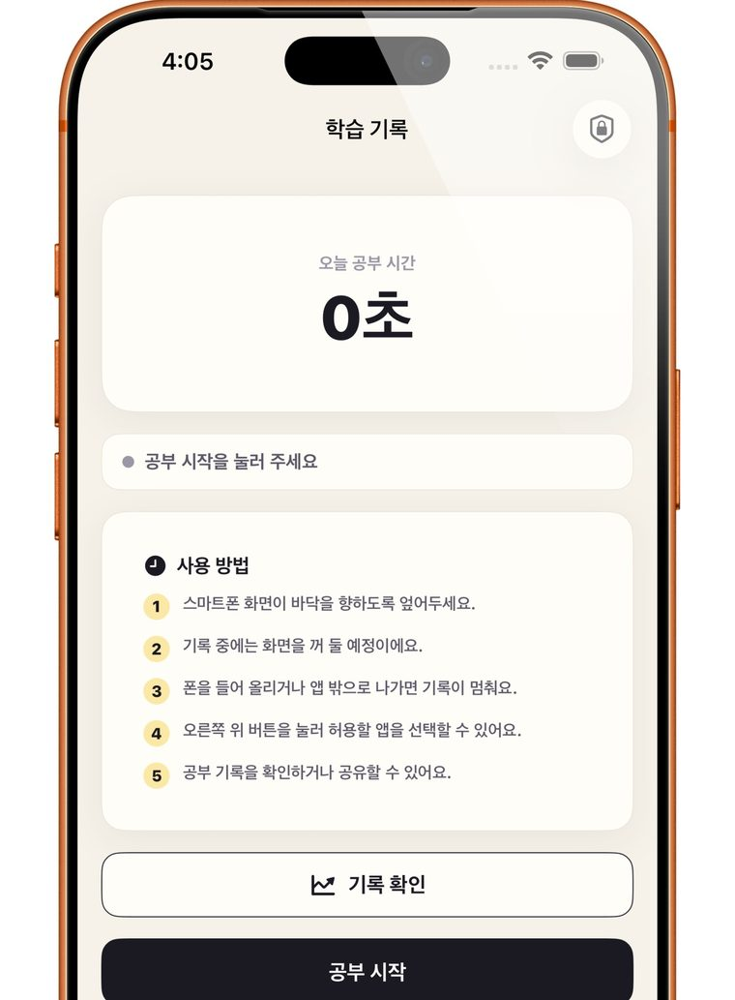

제 이름 Julio와, 가장 좋아하는 곡이자 제가 자라고 싶은 속도인 Supersonic을 합쳤습니다. 앞으로 만드는 것들은 모두 이 이름으로 내놓으려 합니다.
Spotify에서 Supersonic 듣기안녕하세요, Julio입니다. 열여덟 살 학생이고 iOS, macOS, 웹에서 쓰는 앱을 만듭니다. 수능을 준비하면서 필요했던 도구를 직접 만들었고, 좋아하는 아티스트의 팬들이 모일 사이트를 만들었습니다. 지금은 Intel 앱을 M 칩 Mac에서 돌리는 방법을 붙잡고 있습니다.
- 이름
- Julio
- 나이
- 18세
- 지금
- 학생
- 만드는 것
- iOS, macOS, Web
- GitHub
- StudentsView
공부
수험생에게 필요했던 걸
수험생이 직접 만들었습니다.
-
오늘 할 일과 남은 날
대수능.com과 연동되는 스터디 플래너가 첫 화면에 있습니다. 오늘 계획을 얼마나 해냈는지, 수능까지 며칠 남았는지 바로 보입니다.
-
2G폰 모드
정해 둔 앱과 사이트 말고는 열리지 않게 잠급니다. 중간에 풀수록 다음 해제가 점점 느려집니다.
-
모의 수능 타종
실제 수능 시간표와 방송을 그대로 재현합니다. 영어 듣기평가 음원도 골라서 틀 수 있습니다.
-
엎어 둬야 쌓이는 공부 시간
휴대폰 화면을 바닥으로 엎어야 시간이 기록됩니다. 들어 올리거나 앱을 나가면 그 자리에서 멈춥니다.




플랫폼
칩이 바뀌어도
쓰던 앱은 계속 열려야 합니다.
개발 중
x86 to ARM Runner
macOS 28을 위한 실행 도구
Intel 기반으로 만들어진 Windows와 macOS 앱을 M 칩 Mac에서 실행합니다.
x86_64
- push rbp
- mov rbp, rsp
- mov eax, dword ptr [rbp - 4]
- add eax, 1
- pop rbp
- ret
arm64
- stp x29, x30, [sp, #-16]!
- mov x29, sp
- ldur w0, [x29, #-4]
- add w0, w0, #1
- ldp x29, x30, [sp], #16
- ret
왜 macOS 28인가
Apple은 macOS 27까지만 Rosetta 2를 온전히 지원하고, 그 뒤로는 오래된 게임을 위한 일부 기능만 남기겠다고 밝혔습니다. macOS 28부터는 Intel 전용 앱이 열리지 않을 수 있습니다. Runner는 그런 앱들과 Intel 기반 Windows 앱까지, M 칩 Mac에서 계속 쓸 수 있게 하려는 프로젝트입니다.
아직 사업자 등록 전이라 회사라고 부르기엔 이릅니다. 그래서 이 페이지에는 거창한 계획 대신 지금까지 만든 것과 지금 만들고 있는 것을 적었습니다.
앞으로 만드는 것들은 모두 Jupersonic이라는 이름으로 내놓을 생각입니다. 이름을 지을 때 생각한 그 속도로 자라 보겠습니다.
Julio2026년 10월